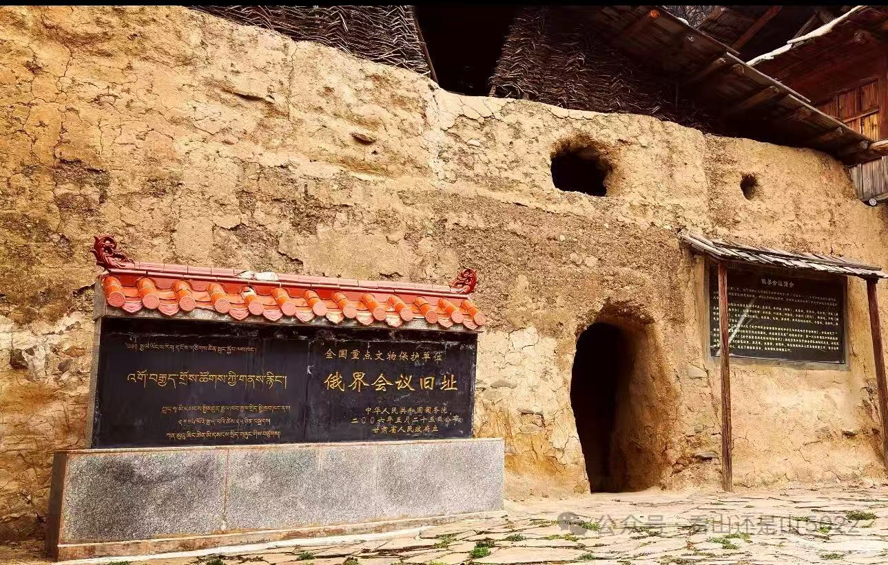
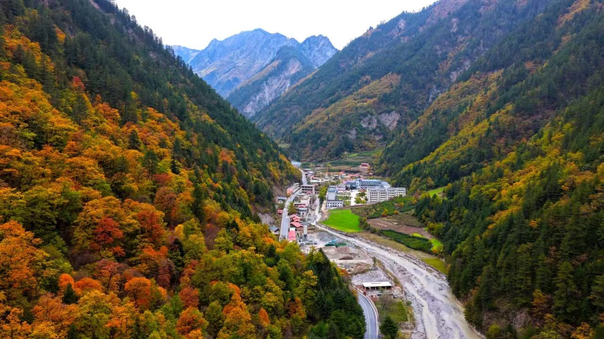

俄界定向 · 腊子口破关 · 峡谷中的地理抉择
1935年9月12日，中共中央在迭部达拉乡高吉村（藏语“高吉”音译为“俄界”）召开政治局扩大会议，确定继续北上抗日的路线。从地理视角看，迭部地处甘川交界、白龙江峡谷之中，是红军走出草地后进入甘肃的第一站，也是选择“向北”还是“向南”的关键决策点。
俄界会议旧址所在的藏式民居至今保存原貌，现为全国重点文物保护单位。会议后红军改编为陕甘支队，为后续攻克腊子口、进入陕甘奠定了基础。

俄界会议旧址（迭部县达拉乡高吉村）腊子口最窄处不足8米，两侧是100多米高的陡峭石崖，腊子河穿峡而过，素有“天险”之称。国民党军凭险筑堡，以机枪封锁隘口和独木桥。红军正面强攻多次受阻后，发现敌人碉堡没有顶盖、崖顶未设防，于是派苗族小战士“云贵川”攀上绝壁，迂回至敌后投掷手榴弹，前后夹击攻克天险。
从地理教学角度看，这是一个典型的“地形制约军事行动”案例：峡谷的狭窄性限制了兵力展开，而崖壁的“可攀爬性”（采药小径）又成为破局关键。

腊子口峡谷地貌（两侧绝壁，中间隘口）| 对应教材/课标 | 核心知识点 | 本页面的教学切入点（迭部案例） | 核心素养 |
|---|---|---|---|
| 八年级上册第二章 中国的自然环境 第一节 地形和地势 |
我国地形类型多样，山区面积广大；地形对交通、军事、聚落的影响。 | 以腊子口峡谷为例，分析“一夫当关，万夫莫开”的地形条件如何限制军事行动，以及红军如何利用崖壁“可攀爬性”破局。 |
区域认知：认识腊子口峡谷在迭部地形中的位置与形态； 综合思维：分析地形对军事行动的制约与破局可能； 地理实践力：通过地图与实景图判读峡谷地形特征。 |
| 乡土教育红色文化研学 | 长征精神的内涵；革命遗址的当代价值；红色旅游与乡村振兴。 | 俄界会议旧址、腊子口战役纪念馆均为免费开放的爱国主义教育基地，高吉村已发展为全国乡村旅游重点村。央视报道中提到“2024年起村集体年均收入突破20万元”“旺藏镇苹果种植3600亩”等，是红色文旅带动乡村振兴的鲜活案例。 |
人地协调观：理解红色文旅与乡村生态、经济的协调发展； 综合思维：分析红色资源—旅游—乡村振兴的关联； 区域认知：认识高吉村、旺藏镇等迭部乡村的空间分布与特色。 |
观察地图上腊子口的位置和周边地形。红军从俄界出发向北，必须经过腊子口。如果你是指挥员，面对“正面强攻受阻”的局面，你会从地图上的哪个方向寻找突破口？